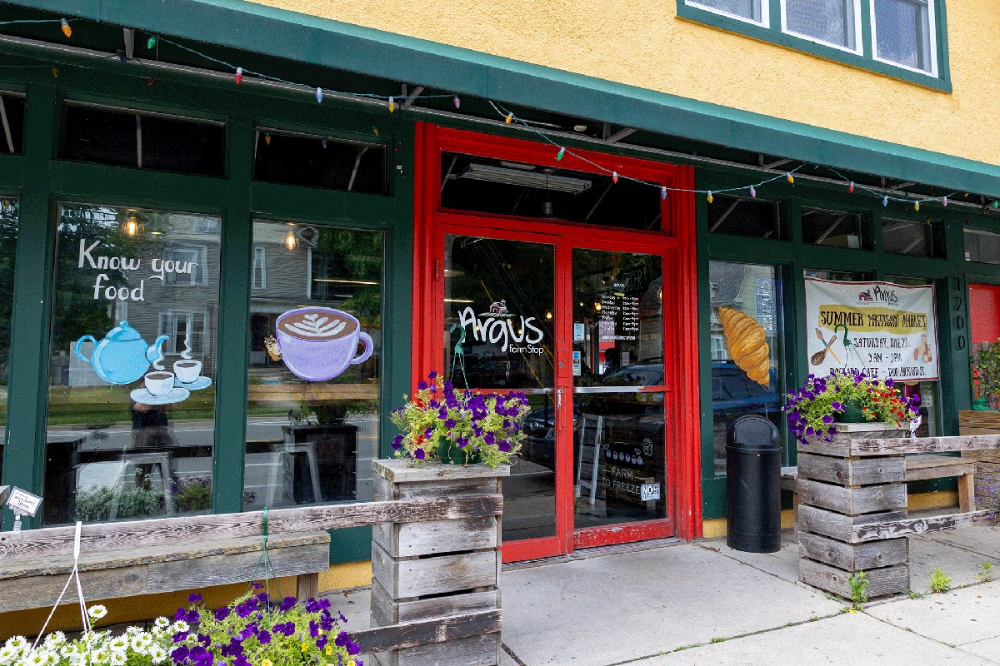

The University of Michigan is known for its rigourous coursework so you will be spending some time studying. Its important to make this time enjoyable so that you can stay on top of your coursework. In order to do that, finding the perfect study spot for you is important. Whether its somewhere quiet, close to food, or social, Michigan has a study space for you!
There are so many great study spots on campus. The following are some great options if you are looking for ideas.
Quiet Spaces
Law Library
The Law Library is University of Michigan's most famous library. It is a historic place and is a popular spot for tour groups.
- Hours: 8AM - 8PM
- Location: Legal Research Building, 801 Monroe St, Ann Arbor, MI 48109
- Availability: Good
- Noise Levels: Complete Silence
- Pros: Beautiful Architecture, complete silence
- Cons: Popular spot for tour groups, no food allowed, closes at 8PM
- Important: Must show valid ID at Entrance Gate, no food allowed
Hatcher Graduate Library Reference Reading Room
The Reference Reading Room is a vaulted, historic space containing long tables with wooden chairs and reading lamps.
- Hours: M-Th: 8AM - 12AM | Fri: 8AM - 5PM |Sat: 10AM - 6PM | Sun: 1PM - 12AM
- Location: Hatcher Library North, Second Floor, Room 200
- Availability: Decent
- Noise Levels: Complete Silence
- Pros: Beautiful architecture, open late, outlets available under all the tables, silent
- Cons: Can have limited space
Hatcher North Stacks Study Tables
The Hatcher North Stacks Study Tables is an out-of-the-way study spot. These tables are located along the perimeter of the book stacks in the Hatcher North Building and many are near large windows.
- Hours: M-Th: 8AM - 12AM | Fir: 8AM - 5PM | Sat: 10AM - 6PM | Sun: 1PM - 12AM
- Location: Hatcher North building
- Availability: Good
- Noise Levels: Very Quiet
- Pros: Quiet, book stacks are a cool environment
- Cons: Limited outlets, difficult to locate
Group Friendly Areas
Ross School of Business
Ross has so many great study spots from the winter garden to Blau. And if you are a Ross student you can book private study rooms.
- Hours: 7AM - 10PM
- Location: 701 Tappan Ave
- Availability: Usually pretty busy
- Noise Levels: depends on location
- Pros: Food places (Starbucks, Seigl Cafe, Zingerman's Cafe), social, lots of outlets
- Cons: Can get busy, very facey
Link to book ross rooms: Ross Study Room Booking Link
Third Floor Undergraduate Library
Third floor of the undergradate library (UGLi),- Hours: M-Th: 24/7 | F: Closes at 6PM | Sat 10AM - 6PM | Sun 10AM - Midnight
- Location: Central Campus, 919 S. University Ave.
- Availability: Busy espeically around exam season
- Noise Levels: Can be high
- Pros: Coffee shop on the first floor, Computer access, open 24/7
- Cons: Can get very busy and loud
The Union
The Union is a great study spot and has great food options as well.
- Hours: M-Sat: 7AM - 2AM, Sun 9AM - 2AM
- Location: Central Campus, 530 S. State St.
- Availability: Usually gets pretty busy
- Noise Levels: High
- Pros: Lots of great food spots (Subway, Panda Express, Panera, Wing Snob, SweetWaters, etc)
- Cons: Can get pretty buys and noise level is high
Coffee Shops
There are many Coffee Shops around campus and they are great options for study spots.
Argus Farm Stop
Argus Farm Stop is a locally sourced, organic grocery shop. They have delicious Coffee and so many other tasty snacks
- Hours: 8AM - 8PM
- Location: 1200 Packard St
- Availability: Good
- Pros: Great food, locally sourced, cute atmosphere
- Cons: Farther from campus, limite outlets
Menu: Argus Farm Stop Food Offerings
Misfit Society Coffee Club
Misfits is a coffee Shop located right below the apartment complex 611. Its goal is to offer a safe space for people and it has a really interesting aesthetic.
- Hours: M-F: 7AM - 7PM | S-S: 9AM - 4PM
- Location: 615 East University Ave
- Availability: Very busy, can be difficult to find a table
- Pros: Good location, cool atmosphere, available outlets
- Cons: Difficult to find a table
Menu: Misfits Menu Offerings
ONDO Bakery and Cafe
- Hours: 7AM - 8PM
- Location: 324 S State St
- Availability: Usually pretty busy
- Pros: Really good coffee and pasteries, close to campus
- Cons: Can be difficult to find a table, often busy and loud
Menu: ONDO Menu Offerings